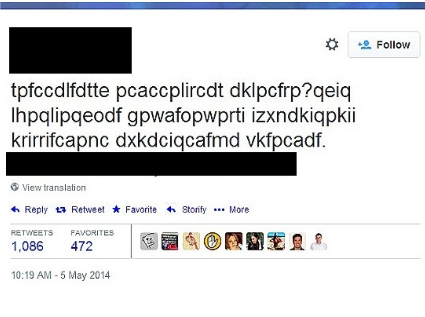
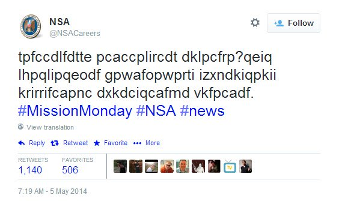

19
This encrypted tweet (in substitution cypher) was posted by a famous organisation, aimed at those seeking to work for it. It took the world by storm a year ago. Which organisation?

"Want to know what it takes to work at NSA? Check back each Monday in May as we explore careers essential to protecting our nation."
